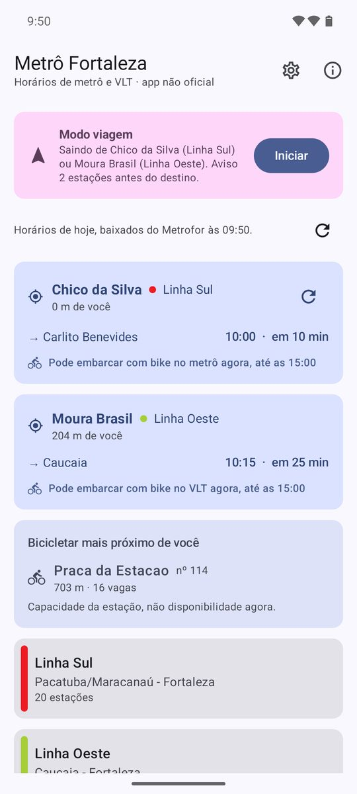
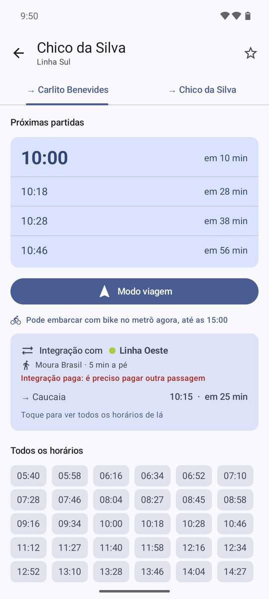
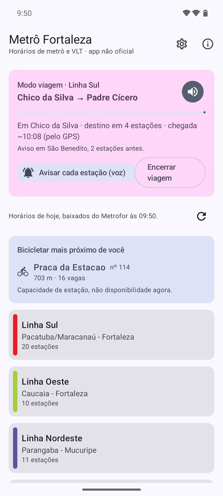

App não oficial. Feito por um passageiro, sem ligação com o Metrofor nem com o Governo do Ceará. Os horários são os que o próprio Metrofor publica.
O que o app faz
🚉 Próxima partida perto de você
Pelo GPS, mostra a estação mais próxima e quando sai o próximo metrô ou VLT, em cada sentido — e as outras linhas que passam por perto.
🔔 Modo viagem
Escolha o destino e guarde o celular: o app avisa duas estações antes de você descer, por notificação e voz, até com a tela desligada.
💺 Ir sentado
Perto do terminal, o app mostra como ir até ele e voltar sentado no mesmo metrô, e quanto tempo isso custa.
🔁 Integração entre linhas
Em Parangaba e Chico da Silva, mostra o próximo metrô ou VLT da outra linha que ainda dá para pegar, e se a integração é paga.
🚲 Bicicletar e bike no metrô
A estação do Bicicletar mais perto e se dá para levar a bike no metrô agora, pelas regras do Metrofor.
📅 Horários do dia
Baixa a grade do próprio dia — inclusive sábado e operação especial, como em dia de eleição. Sem internet, usa a última guardada.



É seguro?
- Código aberto (licença GPL-3.0): qualquer pessoa pode ver e conferir tudo o que o app faz, aqui no GitHub.
- Sem anúncios, sem cadastro, sem rastreadores.
- Sua localização fica no celular: é usada só para achar a estação mais perto e acompanhar a viagem. Nada é enviado para ninguém.
- A internet é usada só para baixar os horários publicados pelo Metrofor.
O Android mostra avisos ao instalar qualquer app que não venha da Play Store. Eles são normais para apps instalados por fora da loja — veja abaixo como seguir.
Como instalar
- No celular Android, toque em Baixar para Android.
- Abra o arquivo metro-fortaleza.apk quando o download terminar.
- Se o Android pedir, permita instalar apps desta fonte (para o navegador ou o gerenciador de arquivos).
- Se o Google Play Protect avisar "app não verificado", toque em Mais detalhes → Instalar mesmo assim.
- Abra o app e toque em Usar minha localização.
Para receber as novas versões sozinho, use o app Obtainium com o endereço do projeto. Também dá para ver todas as versões e novidades.
Apoie
O app é gratuito e feito no tempo livre. Se ele te ajuda, você pode:
- Compartilhar este endereço com quem anda de metrô: giovanildo.github.io/metro-fortaleza-horarios
- Doar via Pix: giovanildos@gmail.com
- Sugerir melhorias ou avisar de problemas por aqui.